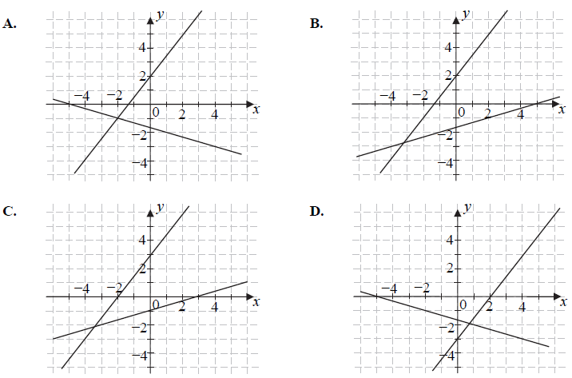
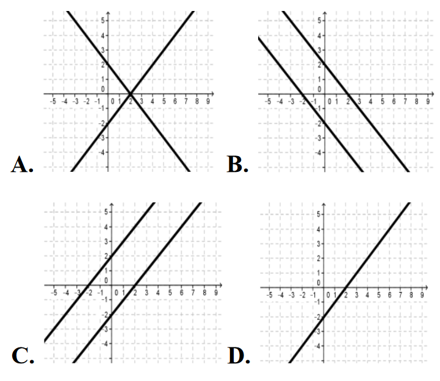

Jesteś tutaj: Matura
podstawowa - kurs - część 12 - zadania
Matura podstawowa - kurs - część 12 - zadania
Na filmie pokazuję praktyczną metodę na szybkie rysowanie dokładnych wykresów
funkcji liniowych.
Czas nagrania: 13 min.
Na jednym z poniższych rysunków przedstawiono interpretację geometryczną układu
równań \[\begin{cases} x+3y=-5 \\ 3x-2y=-4 \end{cases} \] Wskaż ten rysunek. 
A
Na rysunku przedstawiono geometryczną interpretację jednego z niżej zapisanych
układów równań.  Wskaż ten układ.
Wskaż ten układ.
Wskaż ten układ.
A.\(\begin{cases} {y=x-1}\\ {y=-2x+4} \end{cases} \)
B.\(\begin{cases} {y=x-1}\\ {y=2x+4} \end{cases} \)
C.\(\begin{cases} {y=x+1}\\ {y=-2x+4} \end{cases} \)
D.\(\begin{cases} {y=x+1}\\ {y=2x+4} \end{cases} \)
C
Interpretację geometryczną układu równań \[\begin{cases} x-y=2\\ -2x+2y=4
\end{cases} \] przedstawiono na rysunku: 
C
Układ równań \(\begin{cases} y=3x+2 \\ y=(m-2)x+5 \end{cases} \) nie ma rozwiązań,
gdy
A.\( m=2 \)
B.\( m=3 \)
C.\( m=4 \)
D.\( m=5 \)
D
Układ równań \(\begin{cases} x-y=3 \\ 2x+0{,}5y=4 \end{cases} \) opisuje w układzie
współrzędnych na płaszczyźnie
A.zbiór nieskończony.
B.dokładnie 2 różne punkty.
C.dokładnie jeden punkt.
D.zbiór pusty.
C
Rozwiąż układ równań \(\begin{cases} x+3y=5\\ 2x-y=3 \end{cases} \).
\(\begin{cases} x=2 \\ y=1 \end{cases} \)
Układ równań \(\begin{cases} 4x+2y=10\\ 6x+ay=15 \end{cases} \) ma nieskończenie
wiele rozwiązań, jeśli
A.\( a=-1 \)
B.\( a=0 \)
C.\( a=2 \)
D.\( a=3 \)
D
Rozwiązaniem układu równań \(\begin{cases} 3x-5y=0\\ 2x-y=14
\end{cases} \) jest para liczb \((x,y)\) takich, że
A.\(x\lt 0\)i\(y\lt 0\)
B.\(x\lt 0\)i\(y>0\)
C.\(x>0\)i\(y\lt 0\)
D.\(x>0\)i\(y>0\)
D